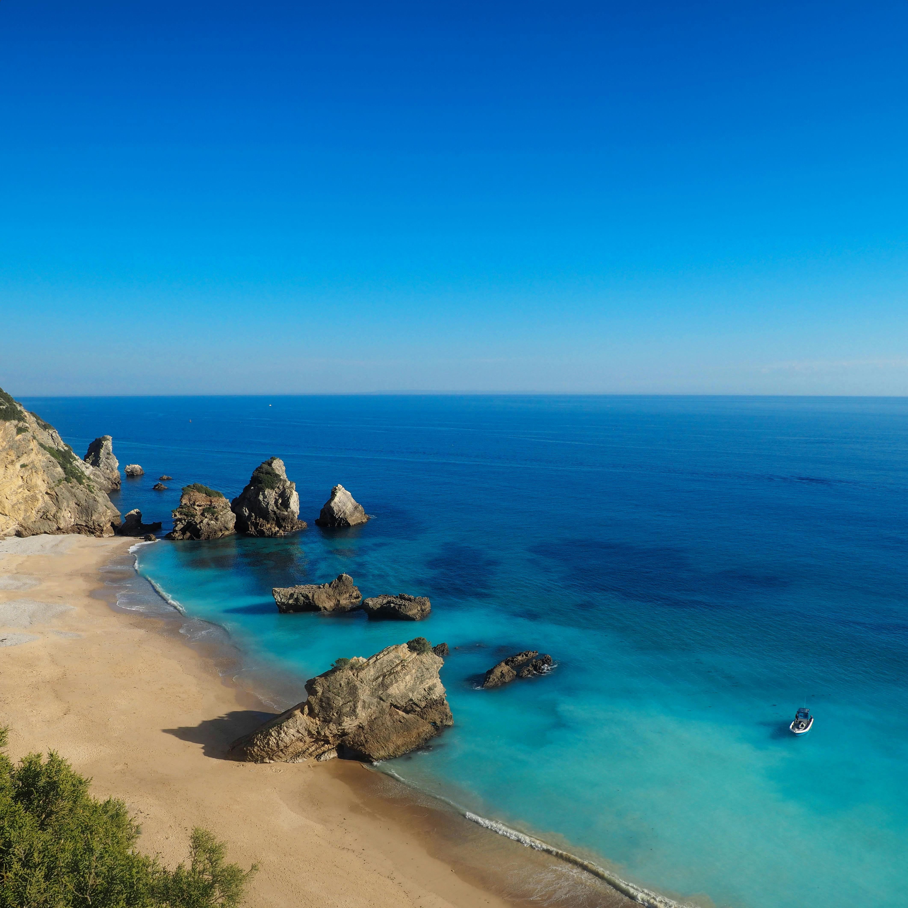
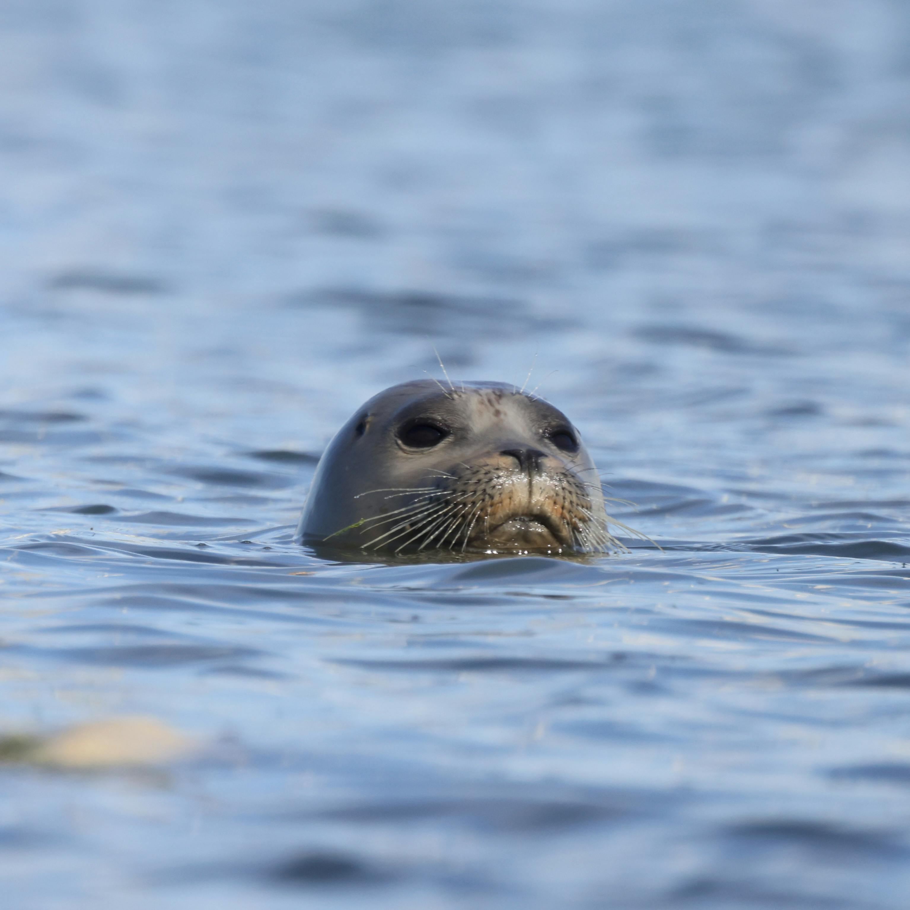
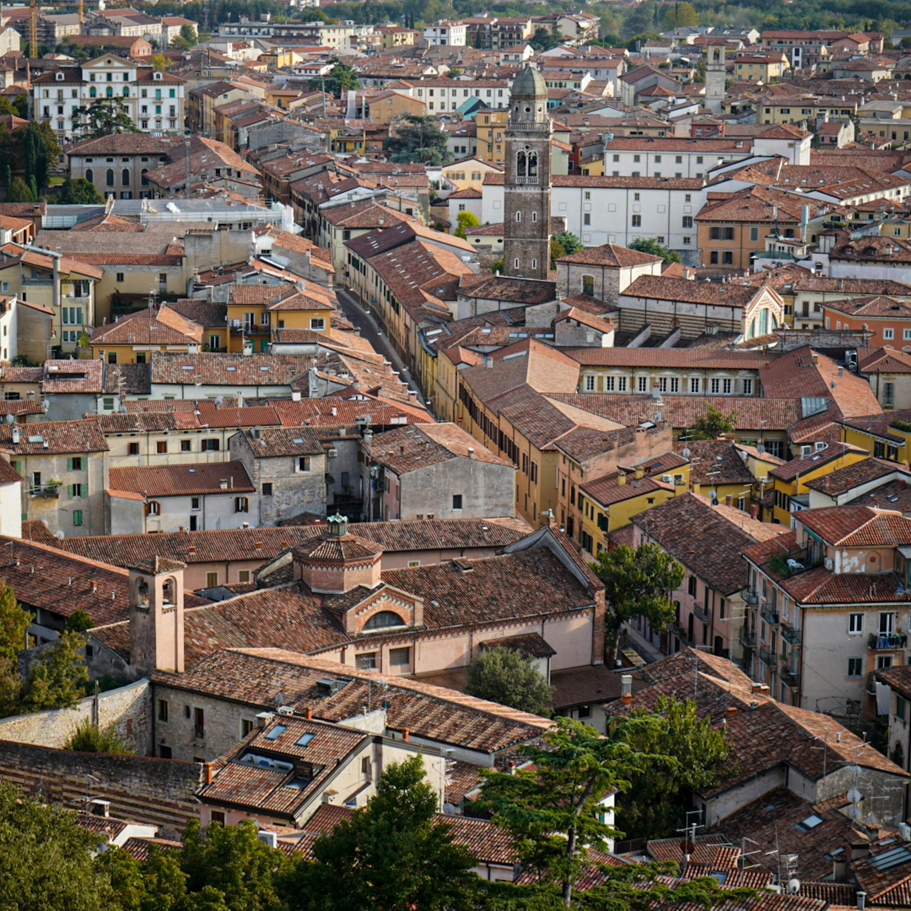
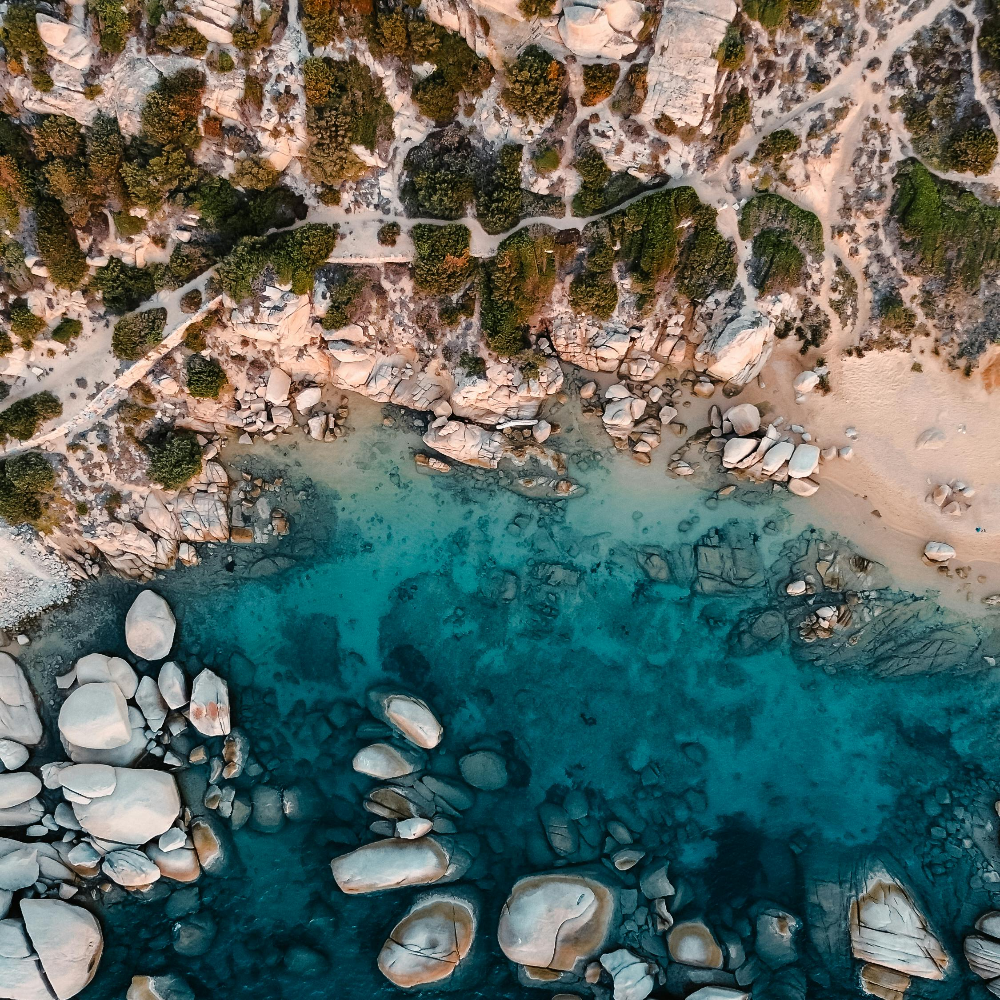

At the edge of inspiring waters, the Adriatic Coast has enchanted sea-lovers for centuries.
Soak in the luminous waves along the east coast nestling the distinct cities and alluring beaches.
Some random information.

The Adriatic coast covers the area of 138.600 km squared

The only seal species in the Adriatic sea is the Mediterranean monk seal

Bari is the biggest city on the Adriatic coast, second is Venice

Cres is the biggest island in the Adriatic sea
The Adriatic sea is a God given summer pool. The temperature is warm enough to stay in for hours, and cool enough to get refreshed from the midday sun.
-Unknown
Call to action! It's time!
Sign up for trips around the Adriatic sea by clicking that button!